My name is William Schubert and I will be majoring in Digital Making and Fabrication.
1. Using digital and physical tools,
engineer and build prototypes that
technology patents are then applied for.
Artifact 1
There are many tools, digital and physical, that are used in this field
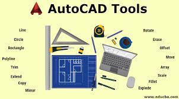
Artifact 2
These are some of the Command Tools used in most CAD software
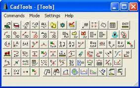
2. Build physical products while demonstrating technique
and safety competency across commonly accepted prototyping
devices, maker tools and techniques.
Artifact 1
Some products that are designed can be used in a surgerical manner
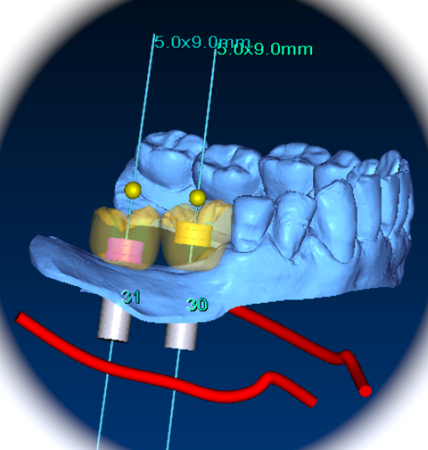
Artifact 2
Other products that are designed are used as medical tools
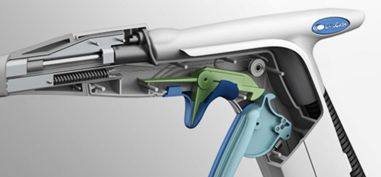
3. Produce products that balance form and function
while reflecting current and future trends in design and human factors.
Artifact 1
Here is an example of how a Rubicks Cube is built
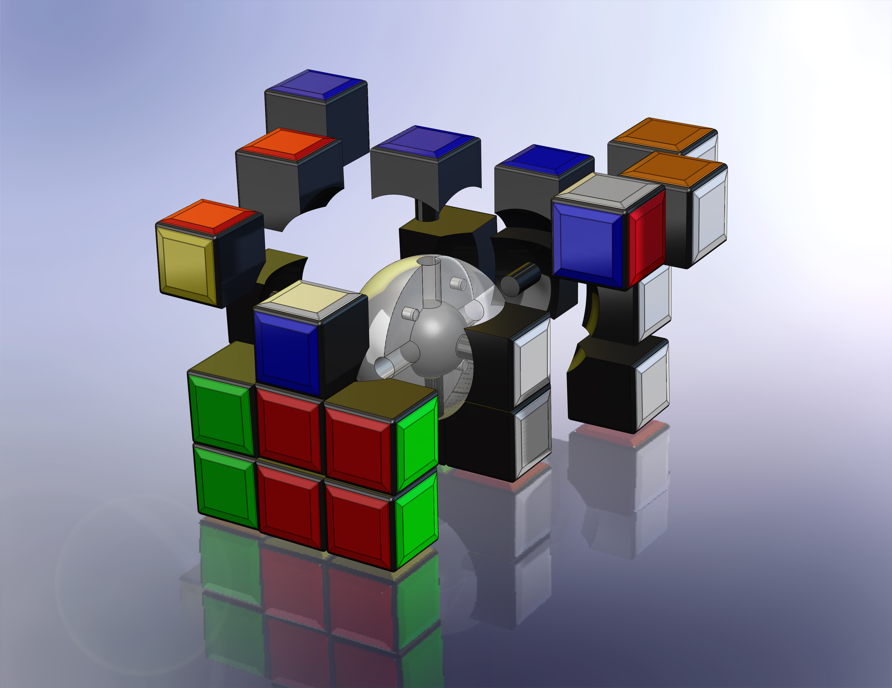
Artifact 2
This is an example of Rubicks Cube art
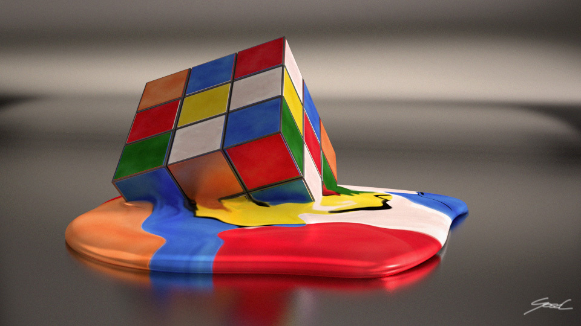
4. Demonstrate the ability to evaluate material
and build technique options during the creation of products and their
prototypes.
Artifact 1
Examples of several different printing materials and styles
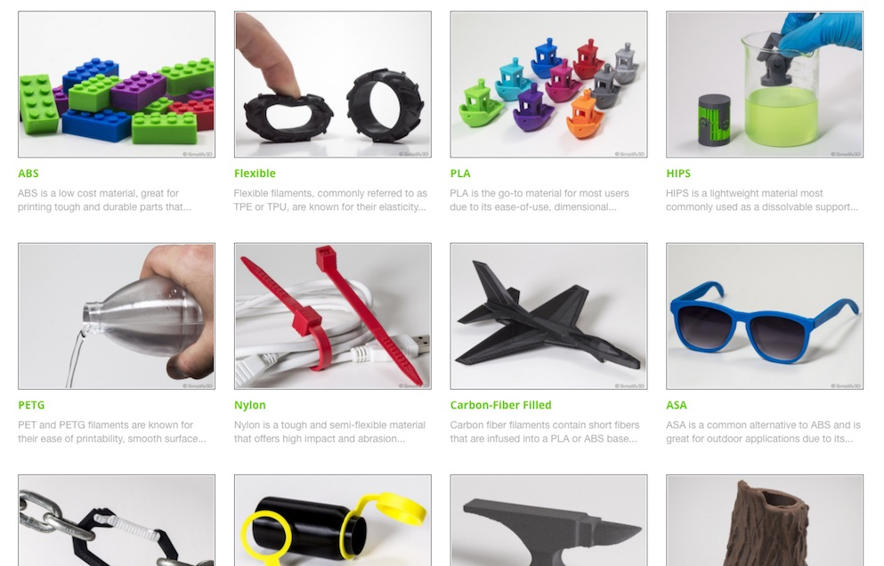
Artifact 2
Examples of the many parts and pieces that may be necessary to create
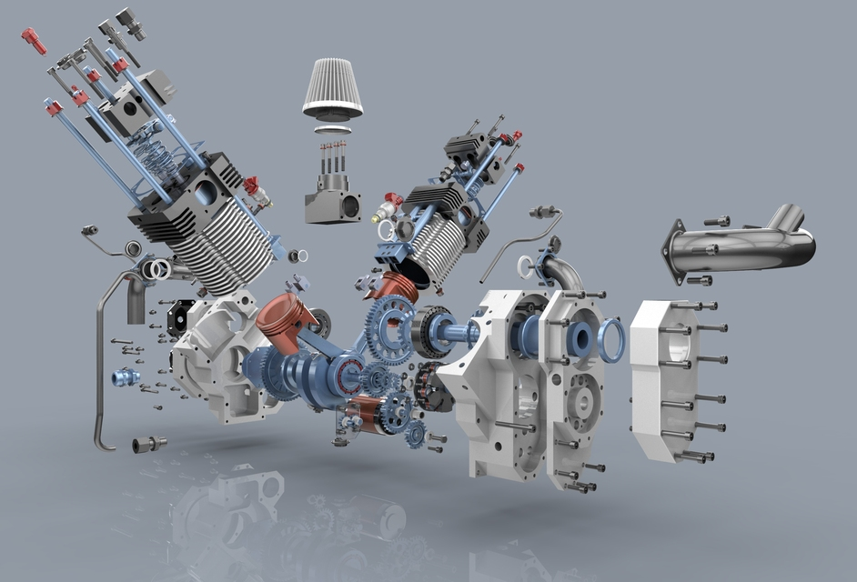
5. Demonstrate the ability to effectively implement
embedded systems and fundamental electronics into product builds.
Artifact 1
Example of an battery operated drill design
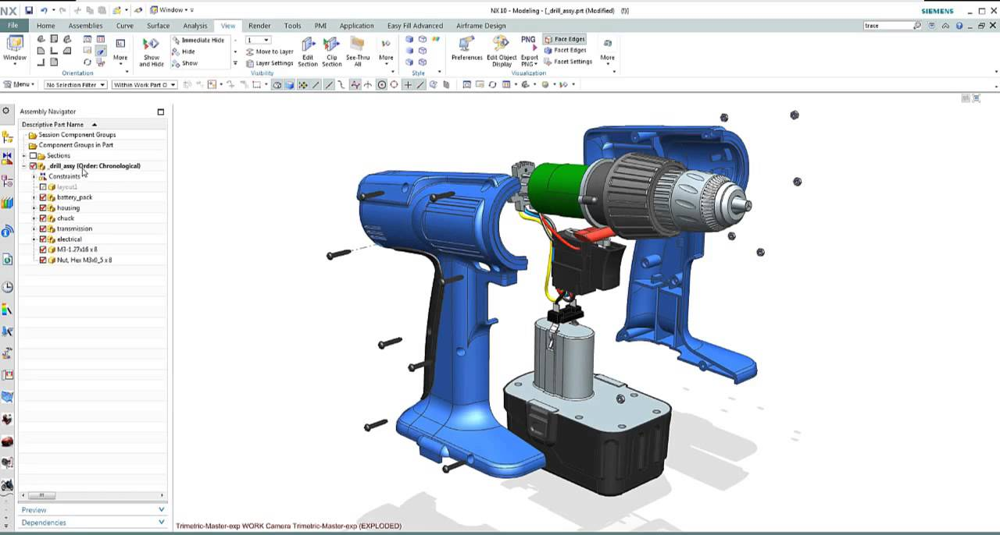
Artifact 2
Example of a hair dryer
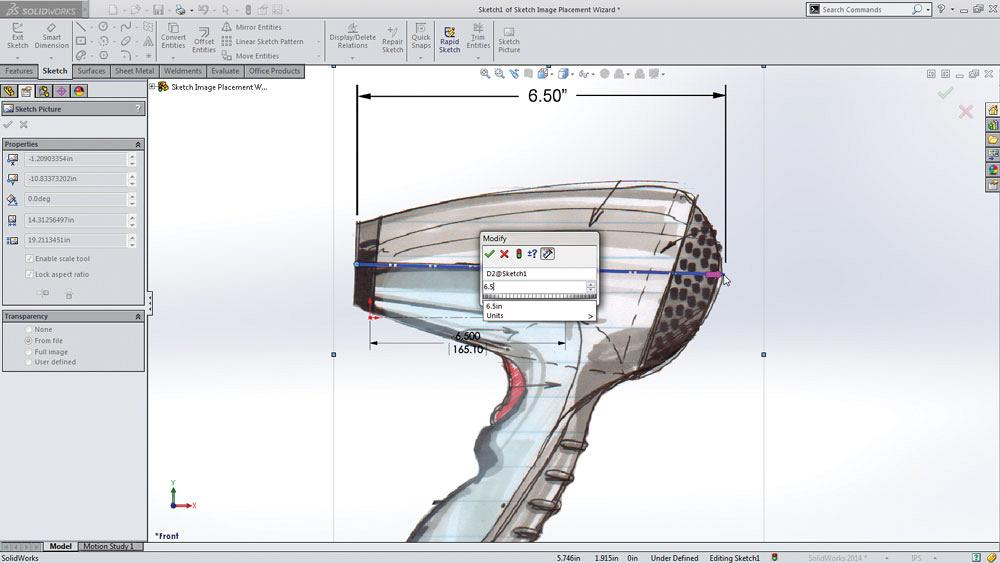
6. Place prototypes and builds within the Agile and MVP development frameworks.
Artifact 1
Agile and MVP development
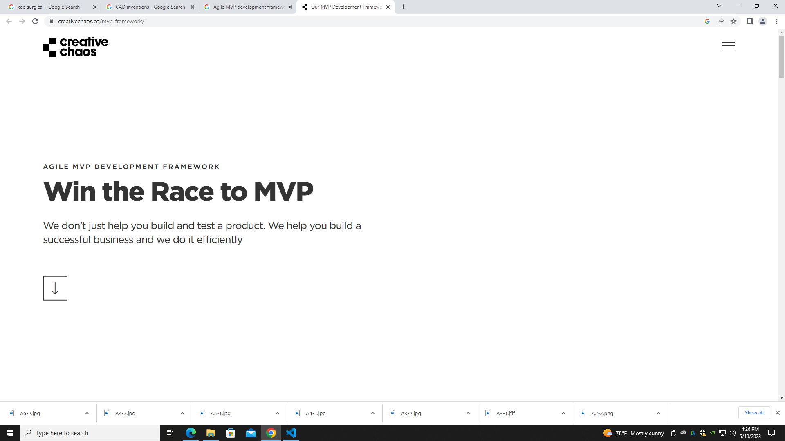
Artifact 2
We all need to start somewhere! See where you can learn at UAT.com